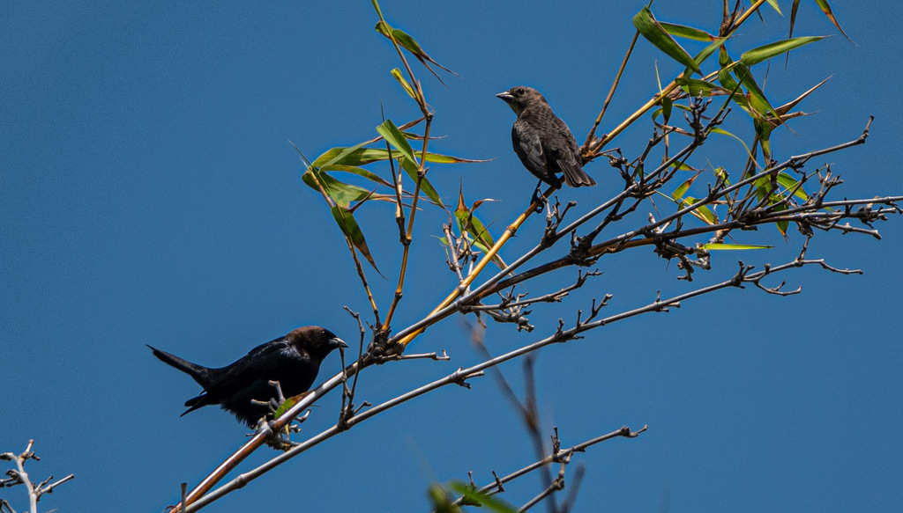

📷 Photo by Rob Carr · CC-BY-NC · via iNaturalist · 📅 Apr 21, 2024
Quick Hits
- A stocky blackbird with a glossy brown head (male) and a drab gray-brown body (female) — smaller and chunkier than a grackle.
- It is North America's most notorious brood parasite: it lays its eggs in the nests of other birds and leaves them to do all the work.
- Over 200 species have been documented raising cowbird young, often at the expense of their own chicks.
- The strategy evolved on the Great Plains, where cowbirds followed bison herds and could not stay in one place long enough to raise their own young.
How to Spot It
Male
Glossy black body with a rich chocolate-brown head.
Female
Plain gray-brown all over — easy to overlook.
Shape
Stocky, short-tailed, with a thick conical bill.
Behavior
Often on the ground near livestock or in mixed blackbird flocks.
Voice
Male gives a liquid, gurgling 'glug-glug-gleee.' Female makes a dry chatter.
What to Look For
A stocky blackbird with a brown head (male) or a plain gray-brown bird (female), often feeding on the ground in open areas.
What It Eats
Seeds, grain, and insects — forages on the ground, often near livestock.
Where & When
Where in the park
Open lawns and ground near the park edges; sometimes in mixed flocks with grackles.
When to see it
Year-round in Florida, though numbers may fluctuate seasonally.
Watching It Respectfully
Observe and enjoy.
Photo Credits
- © Rob Carr (CC-BY-NC), via iNaturalist